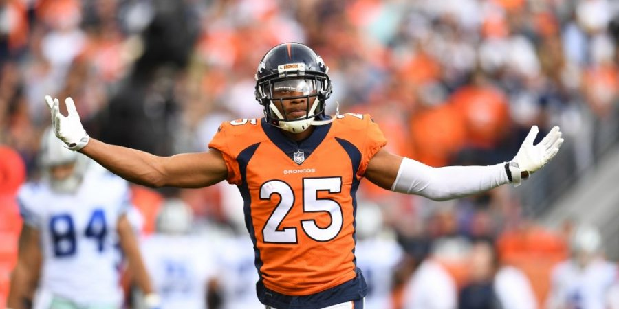
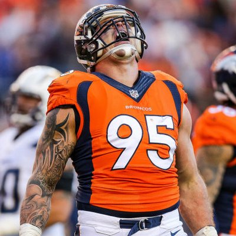
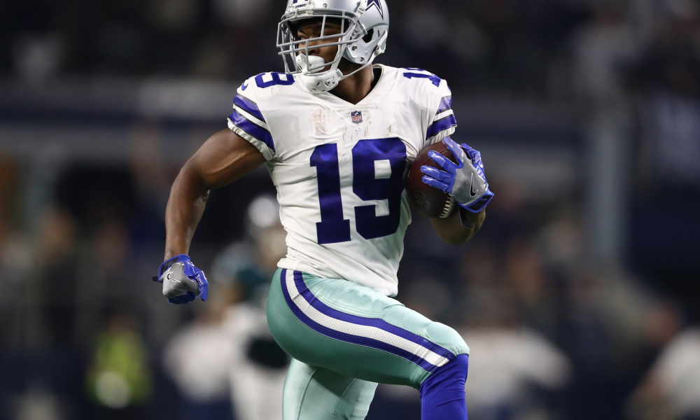
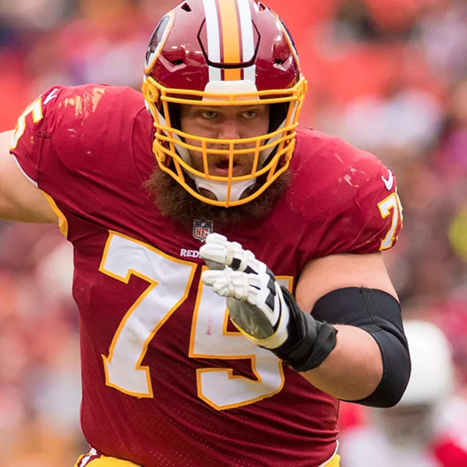

Perhaps the biggest player that the broncos need to resign is star corner back, Chris Harris Jr.. Chris has been a all pro, pro bowl player and part of the Broncos defense for so long. Even with his age he must be resigned.
The Broncos team sack lader before his injury is Derek Wolfe and a capatian of the team is another huge free agency piece the Broncos should look to resign. Even though he is injured again his leadership cannot be over stated and she should be resigned.
WHile there is no guarauntee that that Ameri Cooper will be a free agent even the fact the Broncos could obtain him should excite them. This is a player that could join forces with Courtland Sutton and make a dynamic duo out of both of them.
">One if the top guards in the league could be a extreme assets to the Broncos to pair with rising rookie dalton risner. Brandon Scherff would almost complete the Broncos line and help sure up one of there overall weakness. His hefty contract may hurt but, he is worth the money.